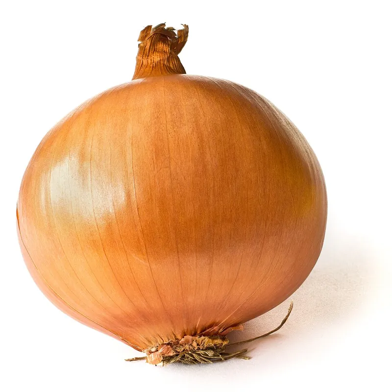

Cómo cultivar cebolla según la duración del día, y ajo sembrado en otoño
La cebolla (Allium cepa) y el ajo (Allium sativum) son parientes cercanos con calendarios opuestos. La cebolla se planta temprano en primavera y el ajo en otoño.

Foto: Colin · CC BY-SA 3.0, vía Wikimedia Commons.
Cebollas del tipo de duración del día que le corresponde a donde vives (el planificador te dice cuál)
Dientes de ajo de un productor de ajo o de una empresa de semillas, listos para plantar en otoño
Paja sin semillas de maleza para acolchar el ajo durante el invierno y mantener las malezas lejos de la cebolla
Un lugar tibio, ventilado y a la sombra para curar la cosecha antes de guardarla
La cebolla y el ajo son parientes cercanos, pero llevan calendarios muy distintos. La cebolla se planta temprano en primavera, y elegir el tipo correcto para tu duración del día decide si sale bien o mal. El ajo se planta en otoño, pasa el invierno en la tierra y está listo a principios del verano.
¿De qué familia son la cebolla y el ajo?
La cebolla es Allium cepa, y el ajo es Allium sativum. Los dos son alliums, un grupo de plantas emparentadas de la familia de las amarilidáceas (Amaryllidaceae). El resto del grupo te va a sonar:
La chalota es la misma especie que la cebolla, Allium cepa, cultivada por un racimo de bulbos más pequeños.
El puerro es Allium ampeloprasum. También lo es el ajo elefante, que a pesar de su nombre es un tipo de puerro.
La cebolla de rabo y la cebolla verde son Allium fistulosum, cultivadas por sus tallos verdes.
El cebollino es Allium schoenoprasum, una perenne que vuelve cada año.
Ser un solo grupo importa sobre todo para la rotación, porque los alliums comparten sus enfermedades del suelo (más sobre eso al final).
¿Qué cebollas debo cultivar donde vivo?
Una cebolla empieza a formar su bulbo cuando los días llegan a cierta duración, y esa duración depende del tipo. Las cebollas de día corto empiezan a formar bulbo con unas 10 a 12 horas de luz, las de día intermedio con unas 12 a 14, y las de día largo con unas 14 a 16. Eso convierte tu latitud en la pregunta clave:
El grupo de variedades de cebolla debe coincidir con la latitud del sitio.
Si no lo sigues, la siembra fracasa. El planificador no lo permite.
Cómo funciona: La formación del bulbo se activa cuando la duración del día cruza el umbral crítico de una variedad (día corto ~10-12h, intermedio ~12-14h, día largo ~14-16h). Una variedad de día corto cultivada demasiado lejos del ecuador cruza pronto su umbral bajo y forma bulbo antes de tiempo en plantas pequeñas, así que los bulbos quedan pequeños. Una variedad de día largo cultivada demasiado cerca de él nunca alcanza su umbral alto y no forma bulbo. El cambio se da alrededor de los paralelos 35 a 38, al norte o al sur.
Evidencia: cotejada con 2 fuentes en la literatura basada en investigación.
… onions will not form bulbs until daylength reaches the cultivar's critical threshold. Short-day onions bulb at approximately 10-12 hours of daylength ... Intermediate-day onions bulb at approximately 12-14 hours ... Long-day onions bulb at 14-16 hours of daylength.
Long day varieties are for northern growing areas (above the 35th latitude); short-day varieties are for southern. If short-day varieties are grown in our zone, they won't do well. They will not form bulbs of any decent size. And since the long day onions need more daylight, they will not do well
Solución
Elige cebollas de día largo lejos del ecuador y de día corto cerca de él; el planificador escoge el grupo según la latitud de tu terreno.
Cuando le dices al planificador dónde está tu huerto, te dice en qué zona de cebolla estás: de día largo, de día corto, o la franja de transición entre las dos, donde las cebollas de día intermedio son la opción segura. La guía de fechas de helada, zonas y duración del día explica por qué esto depende de la latitud. Tu zona de rusticidad no lo decide.
Dos cosas a vigilar al comprar. Las cebollas dulces y suaves suelen ser de día corto, así que lejos del ecuador tienden a quedarse pequeñas. Las cebollitas para plantar (los bulbitos que se venden por bolsa) también pueden ser de día corto: en Minnesota, la mayoría de las que se venden son de día corto, aunque allí el clima le va a la cebolla de día largo. Revisa el tipo en la etiqueta.
¿Cuándo y cómo planto la cebolla?
La cebolla resiste el frío, así que se planta en la ventana temprana del planificador, semanas antes de la última helada:
Los cultivos anuales resistentes al frío se pueden sembrar o trasplantar antes de la última helada de primavera (los resistentes unas tres semanas antes y los semirresistentes unas dos semanas antes). Los sensibles esperan a la propia helada.
Si no lo sigues, aun así crece, solo que peor. El planificador lo sugiere.
Cómo funciona: Resistencia al frío. Los cultivos resistentes toleran heladas fuertes y los semirresistentes toleran heladas ligeras, así que pueden ocupar la tierra semanas antes de que se permita la entrada a los cultivos sensibles a la helada. El desfase se mide desde la última helada de primavera.
Evidencia: cotejada con 2 fuentes en la literatura basada en investigación.
Semilla: siembra en cuanto se pueda trabajar el suelo, a 6–12 mm¼–½ pulgada de profundidad en una franja, y luego aclara las plántulas a 8–10 cm3–4 pulgadas de distancia.
Trasplantes: comprados, o criados bajo techo desde semilla 10 a 12 semanas antes. Aguantan una helada ligera. Ponlos a 5 cm2 pulgadas de profundidad y a 8–10 cm3–4 pulgadas de distancia.
Cebollitas: plántalas en cuanto se pueda trabajar el suelo.
Donde los inviernos son suaves, la cebolla también se puede plantar en otoño o a finales del invierno y seguir creciendo durante los meses frescos. Eso sí, no plantes demasiado temprano en otoño: una planta que crece mucho antes del invierno se puede espigar (echar un tallo con flor), y una cebolla espigada da un bulbo pequeño con el cuello grueso que no se cura bien.
La cebolla tiene raíces poco profundas, así que necesita humedad constante. Si pasa una semana sin alrededor de 2.5 cmuna pulgada de lluvia, empapa bien la cama; el suelo arenoso lo necesita más seguido. Deja de regar cuando los bulbos alcanzan su tamaño completo y las hojas empiezan a caer. Quita las malezas con un azadón superficial, porque un bulbo raspado tiene más probabilidad de pudrirse, o acolcha con paja sin semillas de maleza. Para fertilizar, guíate por un análisis de suelo. Demasiado nitrógeno da bulbos blandos de cuello grueso que no se guardan bien.
¿Cuándo planto el ajo?
El ajo funciona al revés que la cebolla. Lo plantas en otoño para que el frío del invierno haga su trabajo:
El ajo se planta en otoño, no en primavera. Los dientes van a la tierra varias semanas antes de que se congele, echan raíces y pasan el invierno. Las semanas de frío invernal por debajo de unos 40 °F vernalizan el diente, y ese frío es lo que lo impulsa a formar una cabeza la primavera siguiente, a medida que los días se alargan. Plantado en primavera, el ajo no recibe ese frío y forma cabezas pobres.
Si no lo sigues, aun así crece, solo que peor. El planificador lo sugiere.
Cómo funciona: Un diente de ajo no forma cabeza hasta que se ha vernalizado, tras unas seis a ocho semanas por debajo de unos 40 °F. La cabeza en sí no se desarrolla durante ese frío; el frío solo la induce, y se forma en primavera a medida que los días se alargan y suben las temperaturas. Plantar en otoño le da el frío de forma natural durante el invierno con el diente ya enraizado, así que el crecimiento se reanuda temprano y una cabeza completa alcanza su tamaño a principios del verano. Es la misma vernalización bienal que hace espigar antes de tiempo a un cultivo de clima fresco sembrado en primavera, pero con el signo invertido. Allí el frío acumulado empuja a la planta a una floración temprana y la arruina; aquí, en un cultivo sembrado en otoño para cosecharse como cabeza, ese mismo frío es el disparador buscado.
Evidencia: cotejada con 3 fuentes en la literatura basada en investigación.
Plant cloves ... in the fall (October to early November)
content.ces.ncsu.edu
Vegetable GardeningNC State Extension, Extension Gardener Handbook, chapter 16
Garlic | B=180-210 | 4-6 in
Solución
Planta los dientes en otoño, más o menos de finales de septiembre a noviembre en la mayoría de las regiones y varias semanas antes de que la tierra se congele para que echen raíces antes del invierno. Ponlos con la punta hacia arriba, a unas 1 a 3 pulgadas de profundidad y a 4 a 6 pulgadas de distancia, usando los dientes más grandes para obtener las cabezas más grandes. Cuando la tierra ya se haya enfriado, pon un acolchado de unas cuantas pulgadas de paja sin semillas de maleza para amortiguar el levantamiento del suelo por el congelamiento y los daños del invierno. Elige el tipo según el invierno. Los ajos de cuello duro prefieren regiones de inviernos fríos, y los de cuello blando se adaptan mejor a zonas de inviernos suaves.
En un lugar de inviernos fríos como Minnesota, eso quiere decir plantar más o menos una o dos semanas después de la primera helada fuerte. Los dientes echan raíces antes de que se congele la tierra, y los brotes por lo general no salen hasta la primavera. Separa la cabeza en dientes uno o dos días antes de plantar. Pon cada diente con la punta hacia arriba, con la base a 5–8 cm2–3 pulgadas bajo la superficie y a 10–15 cm4–6 pulgadas de distancia, y luego acolcha con 8–10 cm3–4 pulgadas de paja o de hojas.
Planta dientes de un productor de ajo o de una empresa de semillas. El ajo del supermercado es en su mayoría de cuello blando, cultivado en climas suaves, y a menudo se da mal en huertos de inviernos fríos como los de Minnesota. Planta solo dientes firmes y sanos, porque muchas enfermedades del ajo llegan en los propios dientes. Después de tu primera cosecha, puedes guardar los tuyos: aparta los dientes más grandes para plantarlos el otoño siguiente.
¿Qué diferencia hay entre el ajo de cuello duro y el de cuello blando?
El ajo viene en dos tipos principales, y el planificador conoce los dos:
El ajo de cuello duro (Rocambole, Purple Stripe, Porcelain) echa un tallo floral llamado escapo. Quiebra los escapos justo después de que empiezan a enroscarse, y cómetelos. El de cuello duro es el tipo para las regiones de inviernos fríos.
El ajo de cuello blando (Artichoke, Silverskin) no echa escapo, por lo general tiene más dientes y es fácil de trenzar. Le van mejor los inviernos suaves.
¿Cuándo están listos la cebolla y el ajo, y cómo los curo?
La cebolla está lista cuando más o menos la mitad de las hojas se han doblado y secado. Aflójalas con un bieldo y sácalas.
El ajo por lo general está listo entre finales de junio y finales de julio, según el tipo y tu clima. Empieza cuando las hojas de abajo se han puesto cafés pero más o menos la mitad de las de arriba siguen verdes, o saca una cabeza y pártela por la mitad: si los dientes llenan sus pieles, la cosecha está lista. Si cavas demasiado pronto, las cabezas salen pequeñas; si tarde, los dientes empiezan a separarse. Deja de regar el ajo unas dos semanas antes de cosecharlo.
Si no lo sigues, aun así crece, solo que peor. El planificador lo sugiere.
Cómo funciona: Al cosecharlo, el cuello y las capas exteriores del bulbo siguen siendo tejido vivo húmedo y el cuello es un canal abierto hacia el bulbo, así que curarlo con aire cálido en movimiento seca y cierra el cuello y convierte las capas exteriores en una piel protectora como papel, eliminando el tejido húmedo que colonizan las pudriciones de almacenamiento y sellando el cuello por el que entran; un bulbo sin curar entra al almacenamiento con el cuello húmedo y abierto y las capas blandas, y se descompone.
Evidencia: cotejada con 2 fuentes en la literatura basada en investigación.
Allow bulbs to dry until the neck is dry and the outer skin is papery, approximately two to three weeks
Solución
Después de sacarlos, extiende los bulbos en una sola capa o cuélgalos en manojos en un lugar cálido, a la sombra y bien ventilado, lejos del sol directo y la lluvia, y déjalos hasta que el cuello esté seco y apretado y la piel exterior parezca papel. Eso toma más o menos de dos a cuatro semanas para las cebollas (un calor de 75-90 °F lo acelera) y de dos a tres semanas para el ajo. Solo entonces recórtalos, y guarda los bulbos curados en bolsas de malla o cajas poco profundas en un lugar fresco, seco y bien ventilado. Manéjalos con cuidado todo el tiempo, porque los golpes también abren la puerta a la pudrición en el almacenamiento.
Ya curadas, las cebollas se pueden trenzar o recortar y guardar en un lugar fresco y seco, pero sin que se congelen. Por encima de 4°C40°F empiezan a brotar. Para el ajo, corta los tallos a unos 1–2.5 cm½–1 pulgada por encima de la cabeza y recorta las raíces al ras. La guía de cosecha y conservación cubre cómo guardar todo lo del huerto.
¿Dónde van la cebolla y el ajo el año que viene?
La cebolla, el ajo, el puerro, la chalota y el cebollino comparten las mismas enfermedades del suelo, así que rótalos como un solo grupo:
No plantes aliáceas en tierra que tuvo aliáceas en los últimos 4 años, y ten en cuenta que la peor enfermedad de las aliáceas sobrevive a cualquier rotación.
Si no lo sigues, pierdes cosecha de verdad. El planificador te avisa.
Cómo funciona: La pudrición basal por Fusarium (Fusarium oxysporum f. sp. cepae) y la raíz rosada sobreviven en el suelo como esporas y en las raíces de otras plantas, y su inóculo se acumula donde las aliáceas se repiten; un descanso de cuatro años las deja sin alimento. La pudrición blanca (Sclerotium cepivorum) es específica de las aliáceas y sus esclerocios siguen viables de 15 a 40 años, así que la rotación la reduce pero no puede eliminarla.
Evidencia: cotejada con 4 fuentes en la literatura basada en investigación.
White rot survives in soil in the form of sclerotia, which are dense masses of fungal tissue. ... They may remain viable in soil for 15 years or more without allium hosts.
Solución
Planta las aliáceas en otra tierra, o espera a que pasen 4 años desde la última vez que esta tierra las tuvo. Si alguna vez apareció aquí la pudrición blanca, da esta tierra por perdida para las aliáceas y cultívalas en otro lugar.
La única enfermedad que la rotación no puede resolver es la pudrición blanca. Si alguna vez apareció en una cama, cultiva tus alliums en otro lugar de ahí en adelante. La guía de rotación de cultivos te ayuda a acomodar una pausa de cuatro años en las camas que tienes.
Para leer más
Buenos lugares para leer más sobre la técnica de esta página. La calificación de cada tarjeta viene de las fuentes de esa misma tarjeta.